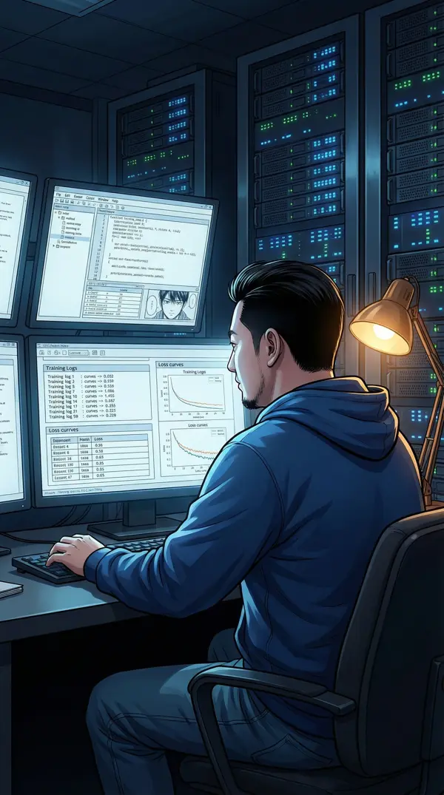
凌晨两点半。深源科技的机房里只有我一个人，72小时不间断的训练终于看到曙光——loss曲线开始收敛了。
我给自己倒了今晚的第四杯美式。杯子上印着'CEO = Chief Everything Officer'——这是陆薇去年生日送我的。说实话，这个头衔越来越名副其实了。
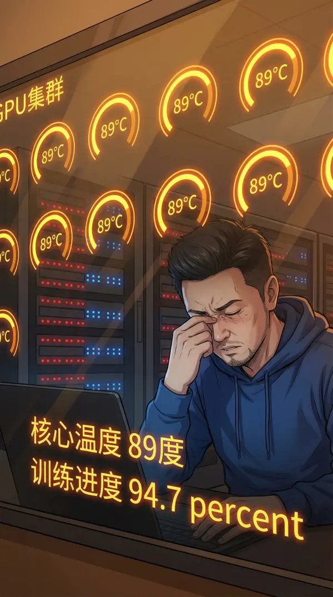
GPU集群温度告警已经弹了三次了。我看了一眼监控面板——核心温度89度，还在安全范围内。再撑一会儿就好。
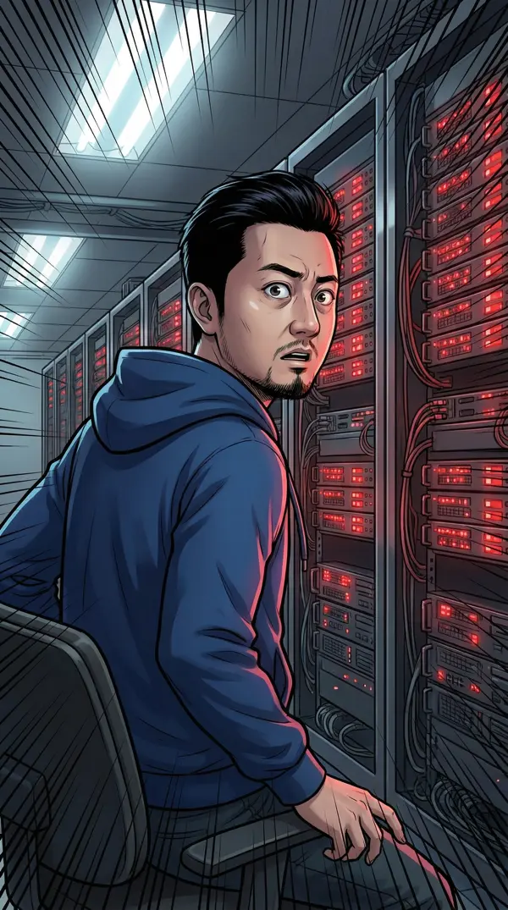
突然，所有屏幕同时闪了一下。不对——不是屏幕，是灯。整个机房的灯都在闪烁。服务器的风扇声从嗡嗡变成了尖啸。
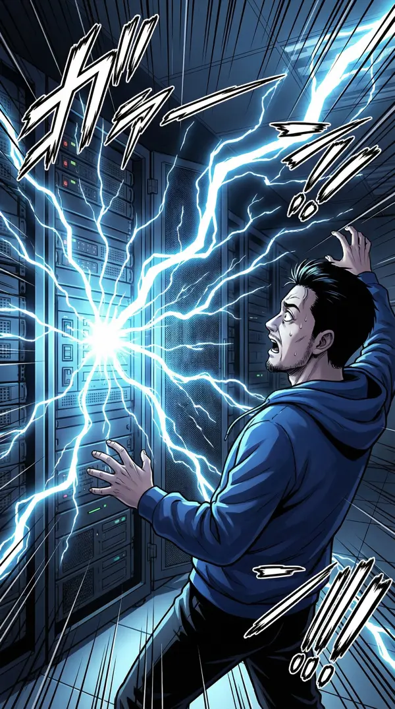
然后我看到了那道光。从三号机柜的配电模块里，一道蓝白色的电弧像闪电一样劈了出来——直奔我站着的方向。
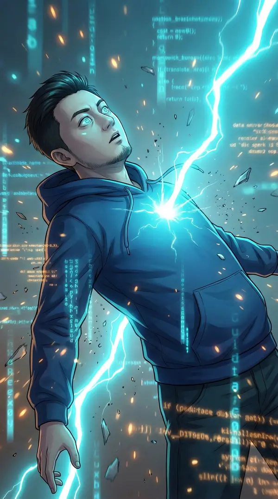
0.03秒。电流穿过我整个身体的时间，只有0.03秒。但在那一瞬间，我好像看到了什么——所有服务器里的数据，像萤火虫一样在空气中飘浮。
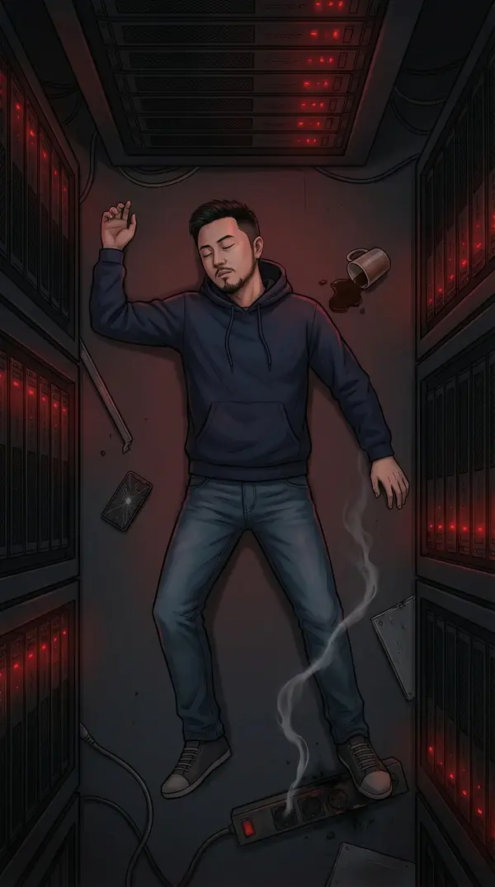
然后，一片黑暗。
再睁开眼，是刺眼的白色。消毒水的味道。手背上扎着针。我在医院。
你昏迷了三天。陆薇坐在床边，银框眼镜后面的眼睛带着明显的黑眼圈。电弧击穿了三号机柜的配电模块，你站得太近了。
训练跑完了吗？我问的第一句话。陆薇的表情从担忧瞬间切换成想打人。你差点死了，问的第一句是loss收敛了没有？我笑了笑：那就是跑完了。
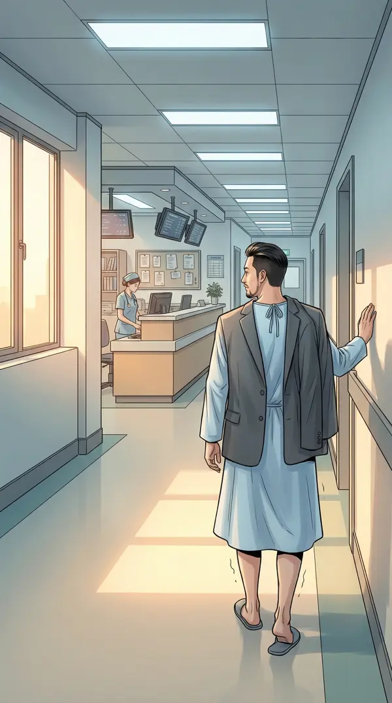
第二天，医生说各项指标正常，可以出院了。我扶着墙走在走廊里，腿还有点发软。路过护士站的时候——
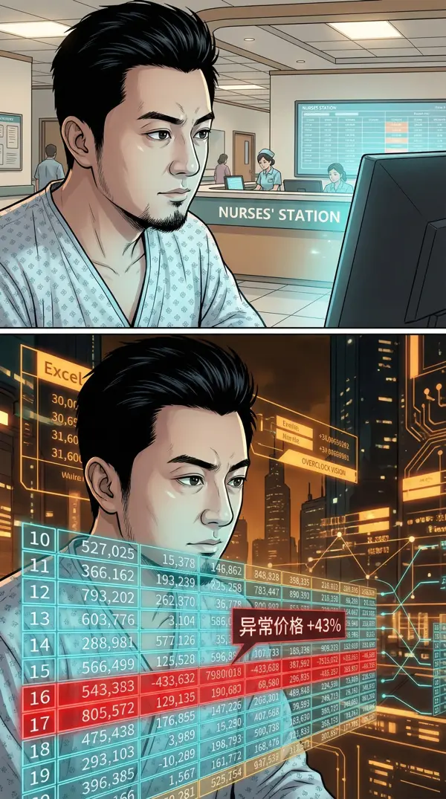
我无意间瞟了一眼护士站的电脑屏幕。然后，世界停了。
屏幕上的Excel表格——我不是在"看"它，我是在"读"它。0.03秒内，我知道了：这是本季度的耗材采购表，总金额¥847,329，其中第17行有一笔异常——同型号注射器单价比市场均价高出43%。
我猛地停住脚步。刚才……我怎么可能一眼就看出来？那个表格起码有两百行，我甚至没有认真看！
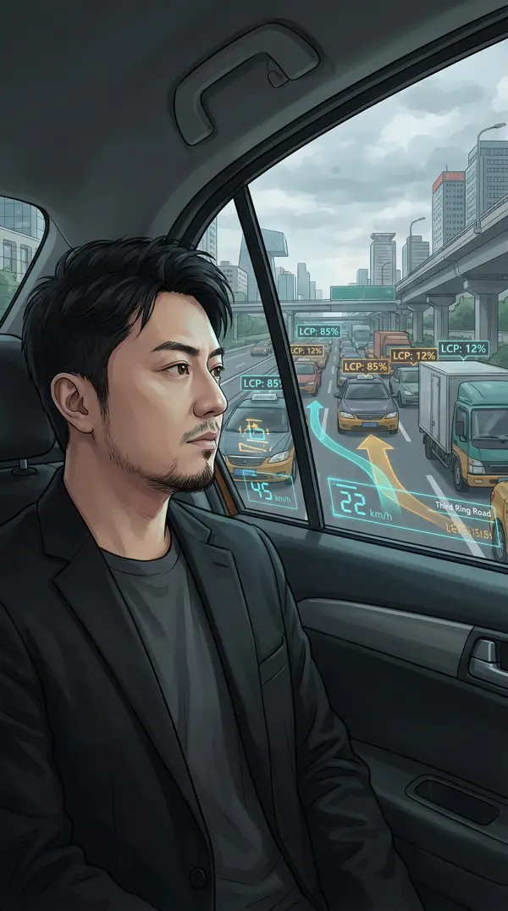
坐上出租车回公司。窗外的北京三环堵成停车场。我试着看了一眼前方——交通流量数据像全息投影一样浮现在我眼前。每辆车的速度、加速度、变道概率……
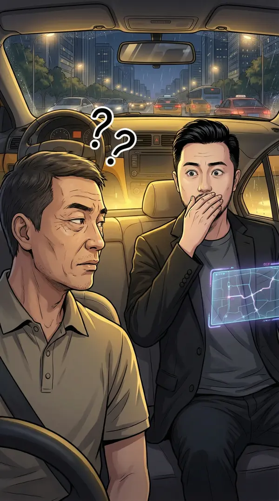
[DECISION-D1] 出租车司机突然问："小伙子，走四环快还是走辅路快？"
我本能地说了句让自己都吃惊的话："走辅路，在下个路口右转，第三条巷子穿过去，能省12分钟。"
司机看了我一眼："你是开滴滴的吧？"
到了。深源科技，中关村软件园二期。四层小楼，玻璃幕墙上贴着我们的logo——一个蓝色的深渊漩涡图案。
三天没来，公司还在。这就够了。
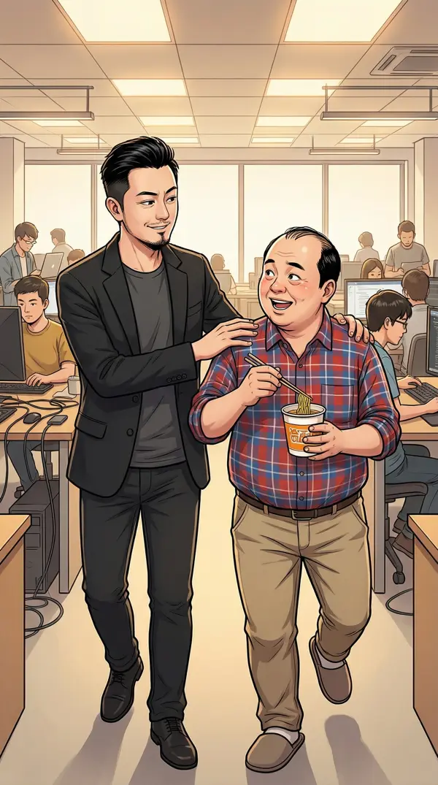
推开门，老周第一个冲过来。"老板你活了！"他手里端着泡面——在整个深源科技，只有他敢在机房旁边吃泡面。
"我一直都活着。"我拍了拍他的肩膀，"三号机柜修好了？"
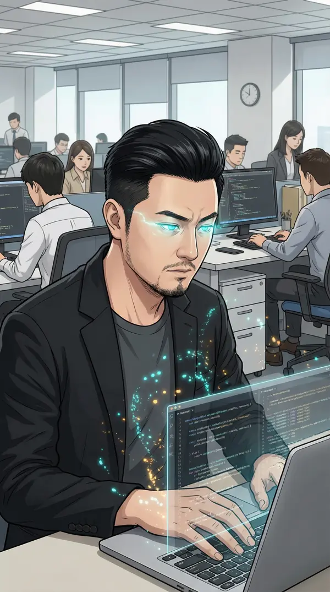
我坐回自己的工位。打开笔记本，登录内部系统。一切看起来都正常——训练确实跑完了，模型效果还不错。
然后，超频感知又发动了。这次是主动的。
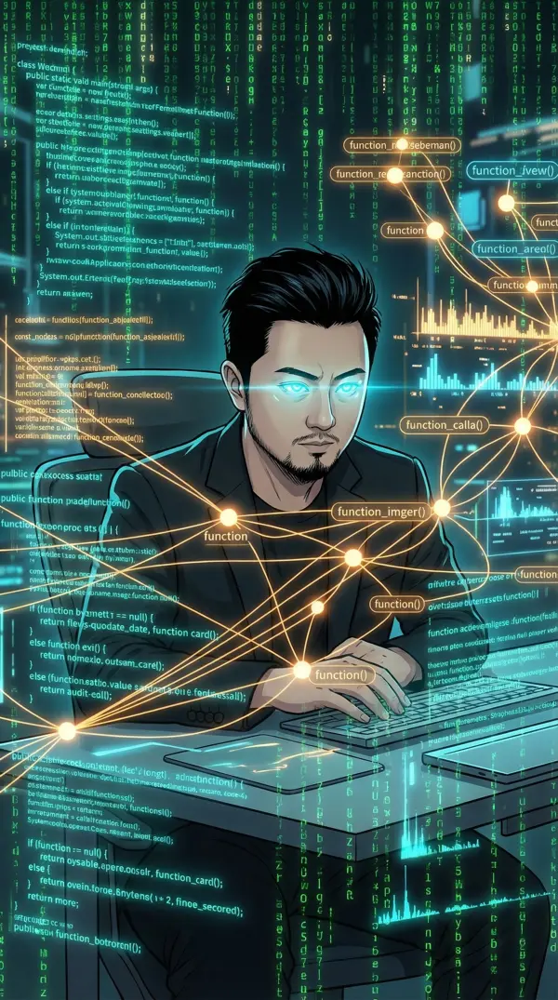
代码在我眼前展开成立体的数据流。我不需要逐行读——每个函数、每个API调用、每条数据流向，全部同时涌进大脑。
就像……就像我变成了大模型本身。
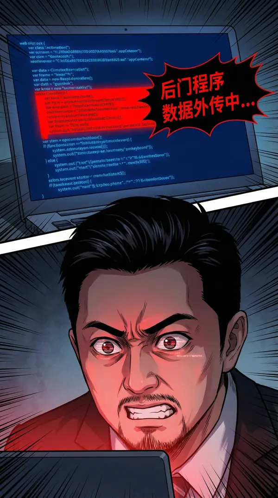
等等。在训练框架的底层模块里……有一段不属于我们团队的代码。
它不是bug。它是一个精心伪装的后门。而这个后门——正在把我们的模型权重，一点一点地往外传。
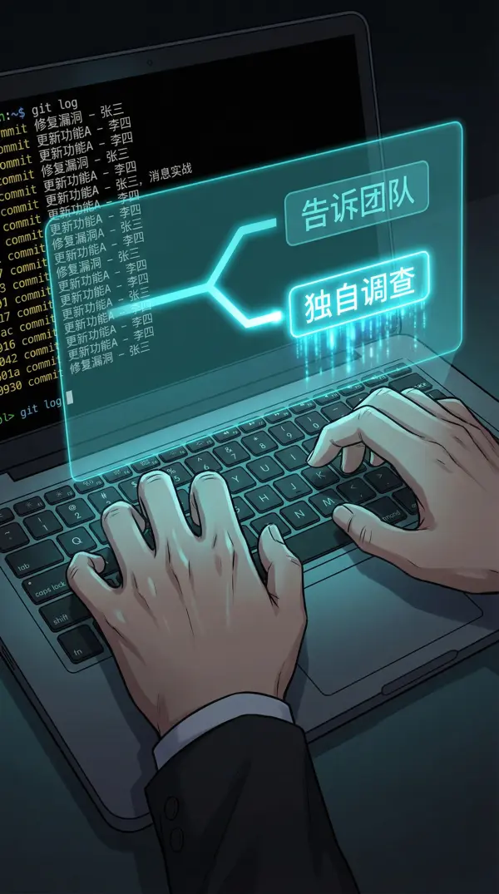
[DECISION-D2] 后门代码。有人在偷我们的模型。我的手悬在键盘上——是直接告诉陆薇和老周，还是先自己查清楚？
我选择了后者。因为超频感知告诉我……这段代码的提交方式太干净了。内部人的手笔。
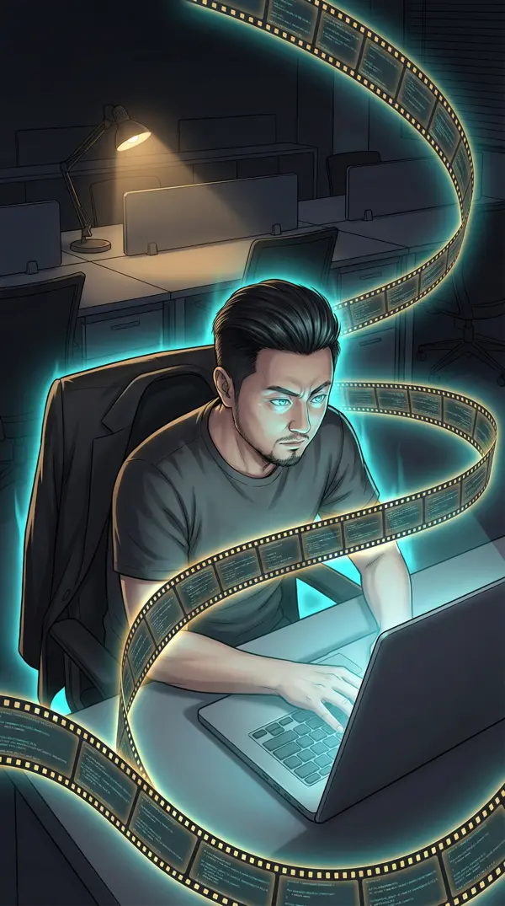
等同事们都走了以后，我开始深挖。超频感知开到最大——代码历史在我眼前快进播放，几千次commit像电影一样闪过。
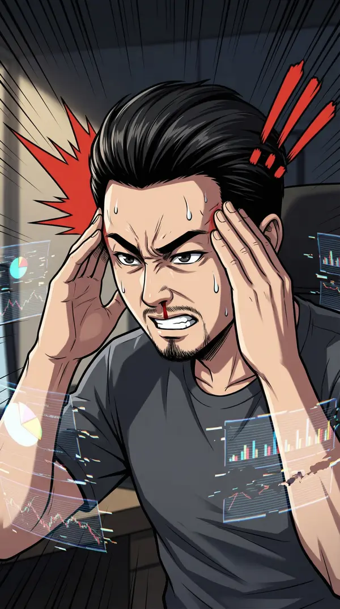
头痛来了。像有人在太阳穴两侧拧螺丝。超频感知的代价——用得越深，脑子越痛。
但我不能停。我已经摸到了那个后门的提交链。
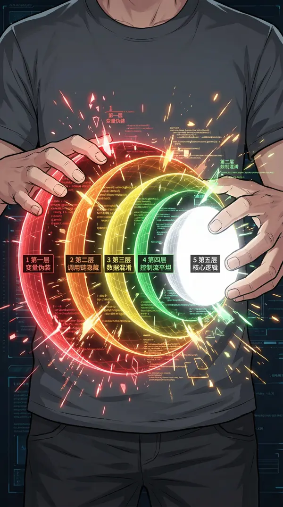
后门被五层混淆代码包裹。第一层：变量名伪装成日志模块。第二层：调用链藏在异常处理里。第三层……第四层……
我一层一层剥开它，像拆一颗精密的定时炸弹。
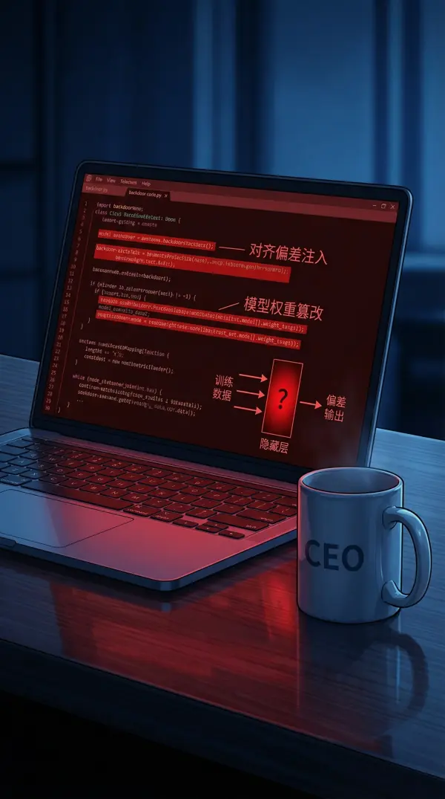
第五层剥开。后门的核心暴露了——它不只是偷数据。它在我们的模型里植入了一个隐藏的对齐偏差。训练出来的模型……会系统性地偏向某个特定方向。
这不是简单的商业间谍。这是在操纵AI。
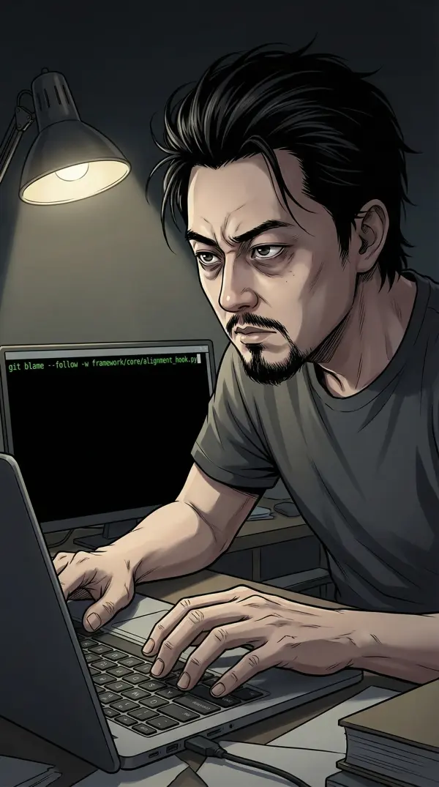
[DECISION-D3] 我需要知道是谁干的。手指在键盘上敲出了命令：
git blame --follow -w framework/core/alignment_hook.py
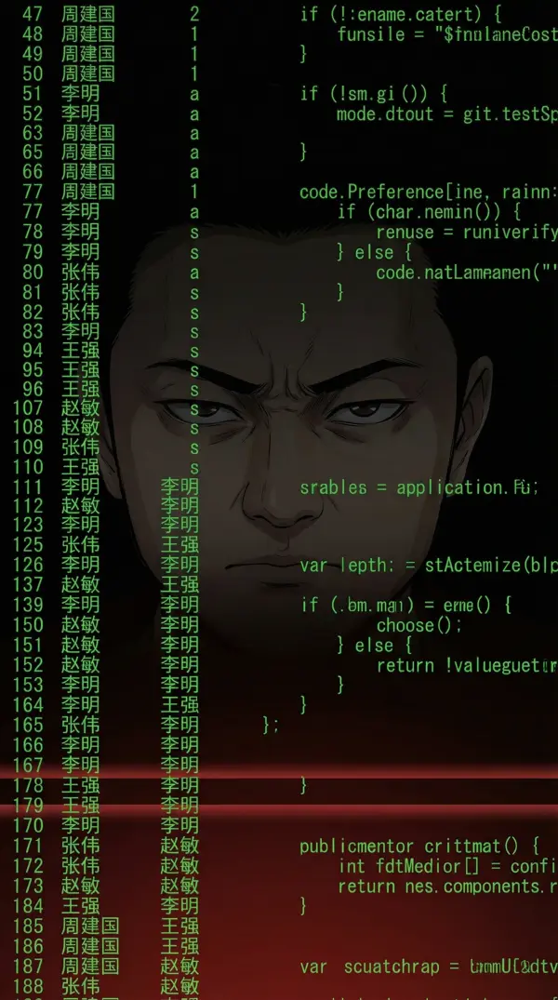
结果出来了。一行一行的提交记录在屏幕上滚动。大部分是老周和几个后端同事的名字。
然后——在第47行到第189行，那段后门的核心代码区间——
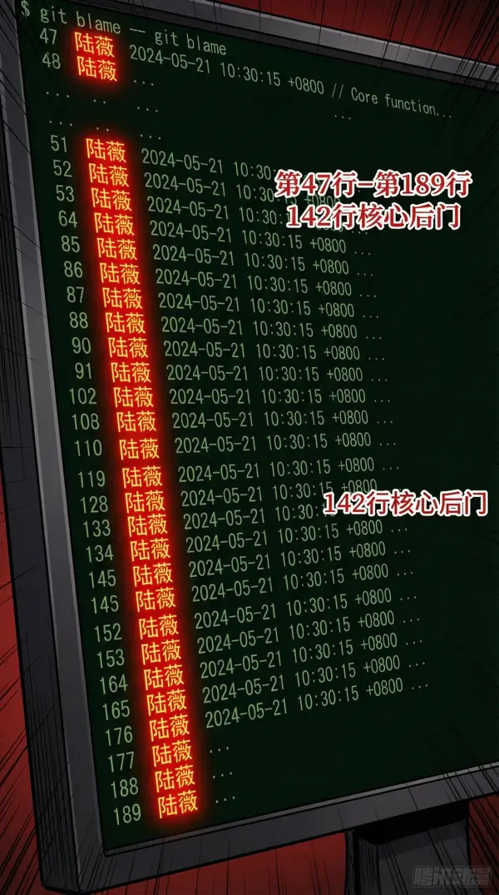
一个名字。反复出现。从47行到189行，142行核心后门代码，全部是同一个人提交的：
陆薇。
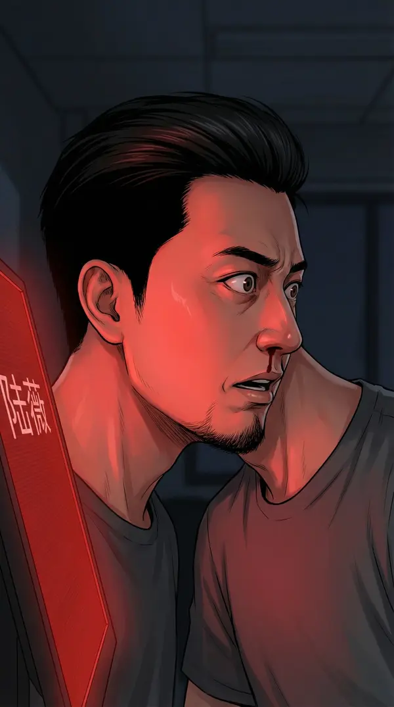
我盯着屏幕，感觉血液都冷了。
陆薇。我的联合��始人。我最信任的技术搭档。从车库创业第一天就在一起的人。
她在偷我们的模型？她在操纵我们的AI？
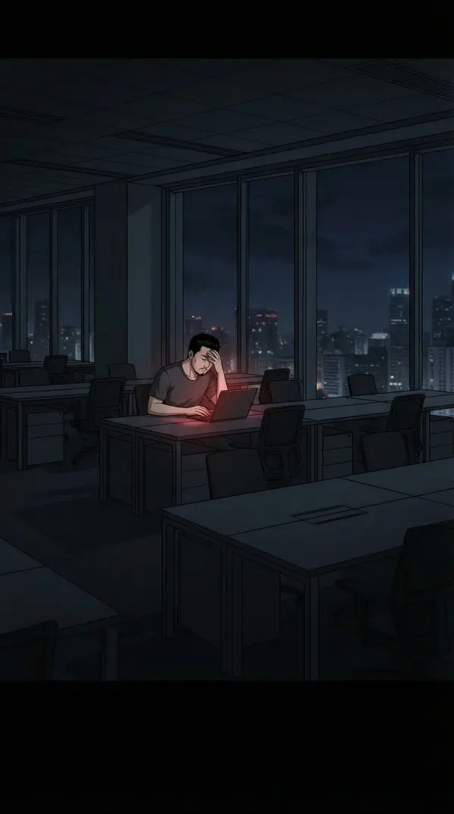
凌晨四点。深源科技的办公室只剩我一个人，和屏幕上那个灼眼的名字。
超频感知的偏头痛已经消退了。但另一种痛，才刚刚开始。
陆薇……你到底在替谁做事？
（未完待续 → Ch2: 数据猎手）